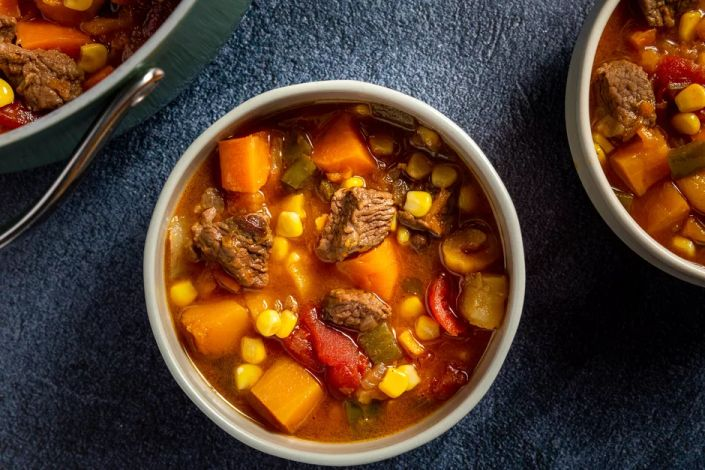

Carbonada Criolla (Argentinian Beef Stew)

Due to the many large cattle ranches in Argentina, meat is
included in several types of dishes in a variety of ways.
This criolla beef stew, from Patagonia, Argentina, may be a
slightly unusual preparation, but it is quite delicious.
Dried fruits—such as apricots or raisins—along with sweet
and white potatoes, give the stew a slightly sweet taste,
while tomatoes and onions, winter squash, and hearty chunks
of beef round out the complex flavor.
Carbonada criolla is a wonderful stew, perfect for when the weather
turns chilly. It is great served with cornbread and a green salad.
Ingredients
- 1/3 cup olive oil
- 1 large onion (chopped)
- 1 green pepper (chopped)
- 2 cloves garlic (minced)
- 1 1/2 pounds stewing beef (cut into 1-inch pieces)
- 1 can stewed tomatoes
- 2 cups beef broth
- 3 sweet potatoes (peeled and cubed)
- 2 white potatoes (peeled and cubed)
- 2 tablespoons sugar
- 1 large winter squash (peeled and cubed)
- 7 ounces dried apricots (roughly chopped (about 1 cup))
- Kosher salt, to taste
- Freshly ground pepper, to taste
- 1 cup frozen corn
Steps
- Gather the ingredients.
- In a large pot, heat the oil and sauté the onions, green pepper,and
garlic until golden and soft, about 10 minutes.
- Add the beef and cook on medium-high heat, turning to brown all sides.
- Add the stewed tomatoes, beef broth, sweet potatoes, white potatoes,
sugar, squash and apricots, and lower heat to a simmer.
- Cover and simmer over low heat for 1 hour. Taste for seasoning, and
season with salt and pepper. Add more beef broth if the stew seems too thick.
- Cook for about 30 minutes longer, until beef is tender. Stir in the
frozen corn, and simmer for 5 to 10 minutes more.
Back
Source